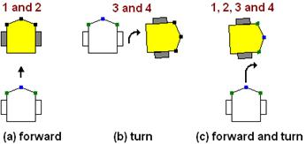

1 An introduction to programming robots¶
[ ]:
from IPython.core.display import display, HTML
display(HTML("<style>#notebook-container { width:50% !important; float:left !important;}</style>"))
[ ]:
#%pip install --upgrade git+https://github.com/innovationOUtside/nbev3devsim.git@draggable-robot
The objective of RoboLab Session 2 is to explain the basics of robot computer programming and show you how to use some of the elementary features of the RoboLab simulator.
It is assumed that you are completely new to computer programming and robotics. We’ll try to avoid jargon and go at a pace that makes it easy for you to understand what is going on.
1.1 Some basics of computer programming¶
For beginners, computer programming can appear to be a very mysterious process. Programming a robot may seem even more daunting, but I hope to show that the basics are quite straightforward. As you saw in Robot Lab Session 1, a computer program is a sequence of instructions or commands, written using words, symbols and numbers.
For example, you might want the robot to go forwards for five seconds. If we control the motors separately, this involves turning each motor on separately, waiting for 5 seconds, and then terminating the program, at which point the motors in our robot simulation are automatically switched off.
The “stop the motors at the end of the programme” behaviour is not guaranteed in other environments used to programme either simulated or real robots. To be safe, it’s often worth making sure you turn off the motors at the end of a programme so you know for sure what state they are in when the programme terminates.
In our environment, we need to:
turn each motor on with a particular speed, which also sets the direction: positive speed values are assumed to mean “go forwards”, negative ones “go backwards”;
wait for five seconds;
(programme ends, motors turned off automatically).
This could be coded in RobotLab using instructions of the form:
left_motor.on(SpeedPercent(50))
right_motor.on(SpeedPercent(50))
sleep(5)
for suitable configurations of left_motor and right_motor.
Perhaps confusingly, the sleep() command, rather than saying “do nothing for 5 seconds”, says “continue to do what you’re already doing for 5 seconds”. For our current example, this means “keep your motors on and running for 5 seconds”.
But how does the programme know what the left_motor and right_motor are? Our programme also requires that we have defined these items earlier in the programme using things it does know about. In particular, we would need to use a construction of the form:
left_motor = Motor(OUTPUT_B)
right_motor = Motor(OUTPUT_C)
Here, the Motor(), OUTPUT_B and OUTPUT_C statements, as well as the previously seen SpeedPercent, are provided as predefined building blocks to use in our own simulated robot control programmes.
The Motor() element refers to programme elements elsewhere that define a Motor object. This computational object provides an abstract representation of a physical (or simulated) motor along with a set of operations or methods that can be enacted upon it. For example, we may turn a motor on in a particular direction and with a particular speed for a particular time or for a specified number of rotations.
The Motor() object is created with an argument that identifies an output port that the physical motor in a real robot, and the simualted motor in a simulated robot, would be connected to. Output ports are used to identify power and/or control lines that a software controller can use to control the behaviour of a physical (or simuluted) device, such as a motor, LED display, or speaker. In our simulated robot case, two output ports are defined, OUTPUT_B and OUTPUT_C. By convention,
we associate OUTPUT_B with the motor on the left hand side of the robot as it travels in a forwards direction, and OUTPUT_C with the right hand motor.
To simplify matters, other “higher level” predefined building blocks are also provided to make writing our programmes simpler.
For example, the MoveTank building block allows us to create a “tank” drive comprised of a left and right motor. We can instruct the tank drive to turn each motor on with its own specified speed and direction, and for a certain amount of time, using a single command:
tank_drive = MoveTank(OUTPUT_B, OUTPUT_C)
tank_drive.on_for_seconds(SpeedPercent(50), SpeedPercent(50), 5)
Computer code usually looks stilted like this because it has to follow very strict rules about which characters go where. Fortunately, the notebooks have some support, know as “tab completion”, for helping you create programs without making typing mistakes. You will learn more about that as we go along.
The following describes what happens when you use a notebook to program our simulated robot.
First, we use some IPython “magic” (and yes, it really is called that!), at the start of a code cell to say that the following code should be passed to a particular instance of our simulator running in the same notebook.
The magic incantation takes the form:
%%sim_magic
and it MUST appear as the first line of a code cell. In the above example, roboSim is the name of the variable associated with our simulator instance.
The rest of the code in the cell is the code that will be passed into the simulator and used to control the the simulated robot. (The same code should also work with a real Lego EV3 robot running the ev3dev operating system.)
When you Run the code cell, the code is “downloaded” to the simulator but is not executed.
To execute your programme, you need to click the Run button in the simulator. Once the code is “downloaded” from your code cell to the simulator (or — if we work out how! This may provide some clues… — to a real robot), the robot is autonomous and runs independently of the code cell within which the program is defined.
The following diagram tries to capture the relationship between the code as seen in a notebook magic code cell and the simulator running as a Javascript programme inside the browser Javascript environment.
![A diagram showing how code wihtin a code cell can be “downloaded” to the nbev3devsim simulator or, in principle, downloaded to a real robot running Linux and the ev3dev-py environment. At one side is a box representing a jupyter notebook and the other side a box representing an EV3 robot. The notebook container contains a “magic code cell” and a separate Javascript environment. The Javascript environment contains an nbev3devsim container. An arrow is shown going from the code cell to the nbev3devsim container inside the Javascript container. Inside the EV3 robot box is a Linux container, and inside that an ev3dev container. An second arrow leads from the magic code cell inside the notebook container to the ev3dev container inside the Linux conainer inside the EV3 robot box.](../../_images/ev3dev-codearchitecture.png)
The diagram also shows how, in principle, the same programme could be used to program the simulated robot or a real EV3 powered robot.
In the simulated robot environment, the same physical computer is being used to do several different things:
to create and edit RobotLab programs in the Jupyter notebook or JupyterLab user interface; the Jupyter notebook interface runs in the browser, and the content of the code cells are executed inside a Python environment running on your computer.
to execute Python code contained in a notebook code cell in a Python environment, or “download” code from a code cell to the simulator;
to execute the program in a simulated robot in a Javascript environment running inside your browser.
Whilst they run on the same physical computer, these programmes actually run in different computational environments on the computer. For example, the simulator is actually a Javascript programme that runs in your browser: once you click on the Run button, it is the simulated robot’s control system that is executing the robot program inside a Javascript environment in your browser. The code is actually sent to the simulator via a Python process when the notebook code cell is run. The IPython
magic tells the Python process to grab the contents of the code cell (and depending on the magic, prefix it with additional boilerplate code), and then send that code to the simulator running as Javascript code in the browser window that contains the notebook user interface.

Would it make sense to use another work in the simulator? “Execute”? “SimRun”?
Getting Started With the Simulator¶
The simulator we will be using must be loaded into each notebook that wants to use it once per notebook. In addition, only one instance of the simulator per notebook is allowed. Any more than that and things don’t work at all.
I’m working on a minimum viable model at the moment, with as few instructions about workflow as I can get away with in the hope that I can iterate a few times, improve the UI, workflow etc, maybe even radically change things. A lot can happen in Jupyter land in 6-8 weeks! The single simulator instance is becuase atm the simulator is embedded into the notebook with a hard coded HTML element id; multiple elements w/ same id break things. It may be a quick fix, it may not; if it’s quick, it may be fixable over a coffee. If it’s not, it could take an afternoon, and then testing time. So that’s parked for now…
The following cell will load in the Python package that makes the simulator available, along with some IPython magic that allows us to interact with the simulator.
[ ]:
from nbev3devsim import ev3devsim_nb as eds
%load_ext nbev3devsim
The simulator itself is created as a Jupyter widget, referenced by a variable of our choosing, in the following case, the variable roboSim. The display() command then renders the widget.
Run the notebook code cell containing the lines:
roboSim = eds.Ev3DevWidget()
display(roboSim)
to create the simulator and embed it in the notebook:
[ ]:
roboSim = eds.Ev3DevWidget()
display(roboSim)
roboSim.element.dialog();
At the moment, things are a little clunky in terms of how we actually get code into the simulator and run it. Using the move selected cells up and move selected cells down up and down arrow buttons in the notebook toolbar, I suggest you move the simulator display so that it is above the code cell you are currently using to programme the robot.
You can then run the notebook code cell to download the programme to the simulator, and press the simulator Run button to exectute the programme in the simulator and watch the result.
Error Messages in the Simulator¶
If you make an error in a programme sent to the simulator, when you try to run the program in the simulator, a message will be displayed in the simulator console.
??Missing image? 
The line number specified will be one less than the line number displayed in the associated code cell if you enable line number display within the cell.
Passing Code into the Simulator¶
To write programme code that can be passed to the simulator and executed within it to control the simulated robot,
[ ]:
%%sim_magic
print('hello world')
1.2 An introduction to sequential programming¶
There are various ways of programming computers to control robots. One of these is the sequential approach, which is the main approach used in RobotLab. This method of writing computer programs, as lists or sequences of commands, produces what are called sequential programs.
In the sequential program model the computer executes commands in sequence.
TO DO: we can just do sequential here using notebook code cells, then introduce the simulator later?
The programme is structured in a particular way that allows the programme to operate correctly (a necessary requirement) as well as making it “readable” (a desirable requirement).
In terms of correctness, the programme requires that we define things within our programme before we try to call on them and make use of them within our programme.
One way of defining things is to import them from a Python package. A package is essentially a collection of predefined programme elements that are useful for a particular programming task.
# Import statements
from ev3dev2.motor import Motor, SpeedPercent, OUTPUT_B, OUTPUT_C
import time
# Definitions
left_motor = Motor(OUTPUT_B)
right_motor = Motor(OUTPUT_C)
# Programme actions
left_motor.on(SpeedPercent(75))
right_motor.on(SpeedPercent(75))
# Wait here for 1 second...
time.sleep(1)
# Programme ends
Lines prefixed by a # are comments that are not executed as programme code but are intended as notes to human readers that can be used to help make a programme more readable.
The following programme turns the left and right motors on at three quarters of their full speed, waits for a short period (1 second), then the programe ends and the motors are automatically switched off.
[ ]:
%%sim_magic
# Import statements
from ev3dev2.motor import Motor, SpeedPercent, OUTPUT_B, OUTPUT_C
import time
# Definitions
left_motor = Motor(OUTPUT_B)
right_motor = Motor(OUTPUT_C)
# Programme actions
left_motor.on(SpeedPercent(75))
right_motor.on(SpeedPercent(75))
# Wait here for 1 second...
time.sleep(1)
# Programme ends
Run the above code cell to download the code to the simulator, and then run the programme using the simulator interface.
When you run the programme in the simulator, the robot should move forwards quickly for one second and then stop. Try increasing the “sleep” time in seconds, re-run the code code cell to download the programme to the simulator, and then re-run it in the simulator. Does the robot behave as you expect? What happens if you also change the SpeedPercent(VALUE), where VALUE is a numerical value that can range from -100 to 100?
Using Predefined Code Building Blocks¶
Writing programmes at such a low level is possible, but we often find it more convenient to programme at a higher level of abstraction. In the following example, we can configure and use a predefined motor drive that allows us to control both motors from a single command.
In particular, the MoveTank() function from the ev3dev3.motor Python package allows us to define a simple tank drive composed of two motors, one on the left hand side of the robot on one on the right hand side. The configuration associates a controllable motor output with a particular motor.
tank_drive = MoveTank(OUTPUT_B, OUTPUT_C)
The tank drive is used to power two motors simultaneously in various ways. For example, we can turn the motors on at a desired speed:
tank_drive.on(LEFT_SPEED, RIGHT_SPEED)
We can also turn the motors on for a specified time and then automatically turn them off at the end of that period:
tank_drive.on_for_seconds(LEFT_SPEED, RIGHT_SPEED, TIME)
The following example shows how we can drive the tank:
forwards in a straight line (both motors at the same speed) for a specified time using the tank drive;
turn on the spot for the same period (one motor forwards, the other backwards, at the same speed); and then
reverse in a straight line for the same period of time (both motors backwards at the same speed.
Run the following code cell to download the program to the simulator and then run the programme in the simulator:
[ ]:
%%sim_magic_preloaded
from ev3dev2.motor import MoveTank, SpeedPercent, OUTPUT_B, OUTPUT_C
# Sequential program
tank_drive = MoveTank(OUTPUT_B, OUTPUT_C)
time_1s = 1
# Go forwards...
# Set the left and right motors in a forward direction at the same speed
# and run for 1 second
tank_drive.on_for_seconds(SpeedPercent(50), SpeedPercent(50), time_1s)
# Turn on the spot...
# Set the left motor forwards and the right motor backwards
# and run for 1 second
tank_drive.on_for_seconds(SpeedPercent(50), SpeedPercent(-50), time_1s)
# Go backwards...
# Set the left and right motors in a backwards direction at the same speed
# and run for 1 second
tank_drive.on_for_seconds(SpeedPercent(-50), SpeedPercent(-50), time_1s)
Activity - Driving the Motors at Different Speeds¶
What happens if the motors are turning in the same direction but at different speeds? Explore this situation by running the followng code cell, using different motorspeed values, to the simulator and running the code there.
What happens if the motors turn in different directions? Is the behaviour as you’d expect?
Check the pen down checkbox so that you can see the trace of where the robot has been.
Note that the simulated robot may not behave as a real robot would. It all depends on how well the simulated robot and the simulator physics have been implemented.
Run the following code cell to download the program to the simulator and then run the programme in the simulator. Experiment using different values for the motor speeds. To compare different configurations, use the pen down control to leave a trace showing where the robot hos been and the Move position reset button to reset the starting position of the robot between each run. Remember to download updated configurations to the simulator by running the updated code cell before re-running the programme in the simulator.
[ ]:
%%sim_magic
from ev3dev2.motor import MoveTank, SpeedPercent, OUTPUT_B, OUTPUT_C
# Try motors with difference speeds
tank_drive = MoveTank(OUTPUT_B, OUTPUT_C)
TIME_IN_S = 5
LEFT_MOTOR_SPEED_PC = -50
RIGHT_MOTOR_SPEED_PC = -50
tank_drive.on_for_rotations(SpeedPercent(LEFT_MOTOR_SPEED_PC),
SpeedPercent(RIGHT_MOTOR_SPEED_PC),
TIME_IN_S)
Answer¶
Click the arrow in the sidebar to reveal the answer.
With both motor speeds set in the forward direction, if the left motor speed is slightly faster than the right motor speed, then the robot curves towards the right; if the right motor is slightly faster than the left motor, the robot curves to the left. The greater difference between the speeds, the tighter the curve.
If one of the motors is set at a forward speed and one is in reverse, the robot turns in a tight circle centred on the reverse turning wheel.
If both motors are are going backwards (negative speed), then wuth the .on_for_seconds() command, the robot does not move. This seems to be an issue with the simulator.
Turning the Motors on for a Specified Number of Wheel Rotations¶
As well as turning the motors on for a specified period of time, we can also turn them on for a specified number of rotations of the wheels:
tank_drive.on_for_rotations(LEFT_SPEED, RIGHT_SPEED, ROTATIONS)
This is easy to imagine for the case where the wheels are turning at the same speed, but if one wheel turns faster than the other, the robot will follow a curving path and the ooutside wheel will travel further than the inside wheel (assuming that the inside wheel doesnlt slip).
TO DO - we could have a diagram here showing a robot driving round a circle; the circumference of the locus followed by the outer wheel wheel will be shorter than that of the inner wheel making it clear that if the wheels are the same size, the outer one must rotate more than the inner one.
From the documentation, ‘if the left speed is not equal to the right speed (i.e., the robot will turn), the motor on the outside of the turn will rotate for the full rotations while the motor on the inside will have its requested distance calculated according to the expected turn.’
The following code cell provides code for exploring the use of the .on_for_rotations() command.
Run the following code cell to download the program to the simulator and then run the programme in the simulator. Experiment using different values for the motor speeds and number of rotations. To compare different configutations, use the pen down control to leave a trace showing where the robot hos been and the Move position reset button to reset the starting position of the robot between each run. Remember to download updated configurations to the simulator by running the updated code cell before re-running the programme in the simulator.
[ ]:
%%sim_magic
from ev3dev2.motor import MoveTank, MoveSteering, SpeedPercent, OUTPUT_B, OUTPUT_C
tank_drive = MoveTank(OUTPUT_B, OUTPUT_C)
LEFT_MOTOR_SPEED = SpeedPercent(50)
RIGHT_MOTOR_SPEED = SpeedPercent(55)
ROTATIONS = 4
tank_drive.on_for_seconds(LEFT_MOTOR_SPEED, RIGHT_MOTOR_SPEED, ROTATIONS)
Compared to the .on_for_seconds() command, the .on_for_rotations() command is capable of going backwards!
TO DO - we could make that an activity and have an example of annotated screengrab of the simulator showing different traces.
Steering the Robot — MoveSteering¶
As well as the MoveTank() configuration, a MoveSteering() configuration is also available that again is based on the presence of two motors connected to the same controllable outputs:
tank_turn = MoveSteering(OUTPUT_B, OUTPUT_C)
The MoveSteering() configuration again drives both motors simutaneously, although this time at the same speed but in different directions.
To turn the robot, we use the command:
tank_turn.on(STEERING, SPEED)
where STEERINGsteering is a numerical value between -100 and 100 and where:
-100means turn left on the spot (right motor at 100% forward, left motor at 100% backward);0means drive in a straight line, and100means turn right on the spot (left motor at 100% forward, right motor at 100% backward).
As well as turning the steering drive on, we can turn it on for a specified time using .on_for_seconds(STEERING, SPEED, TIME) as in the case of the tank drive.
The following programme gives a simple example of how to turn the robot using the MoveSteering() motor configuration.
Run the following code cell to download the program to the simulator and then run the programme in the simulator. Experiment with various settings for the s
TO DO - it would perhaps be interesting to have a simple simulator view, cf. aremote control, where we can turn the motors on or off, select a motor group, and set the motor speeds, steering degree etc. Maybe do this with a magic that has a couple of ipywidgets that send realtime updates to a free running simulator?
Alternatively, we can turn the steering drive on for a specified number of rotations of one of the wheels:
on_for_rotations(STEERING, SPEED, ROTATIONS)
Running the following code cell provides a demonstration:
[ ]:
%%sim_magic
from ev3dev2.motor import MoveTank, MoveSteering, SpeedPercent
from ev3dev2.motor import OUTPUT_B, OUTPUT_C
tank_drive = MoveTank(OUTPUT_B, OUTPUT_C)
# the first two parameters can be unit classes or percentages.
tank_drive.on_for_rotations(SpeedPercent(50), SpeedPercent(50), 4)
# drive in a turn for 2 rotations of the outer motor
tank_turn = MoveSteering(OUTPUT_B, OUTPUT_C)
tank_turn.on_for_rotations(-100, SpeedPercent(75), 2)
Question¶
If a simulated robot starts pointing towards the top of the screen, will it turn towards the right or left while executing the sequence of commands shown in the code cell below?
Before you run the code, make a prediction about what you thing the robot will do when the code is executed by the simulated robot.
If a simulated robot starts pointing towards the right hand side of the screen, will it turn towards the top or bottom of the screen while executing the same sequence of commands?
DOUBLE CLICK THIS CELL TO EDIT IT.
When the following code is executed by the robot simulator, I predict …***YOUR ANSWER HERE*… .
[ ]:
%%sim_magic
from ev3dev2.motor import MoveTank, MoveSteering, SpeedPercent, OUTPUT_B, OUTPUT_C
tank_drive = MoveTank(OUTPUT_B, OUTPUT_C)
time_1s = 1
# Set the left and right motors in a forward direction
# and run for 1 second
tank_drive.on_for_seconds(SpeedPercent(50), SpeedPercent(50), time_1s)
# Set the left motor forwards and the right motor backwards
# and run for 1 second
tank_drive.on_for_seconds(SpeedPercent(50), SpeedPercent(-50), time_1s)
Answer¶
Open and run Sequence to see what happens. The first two commands in Sequence move the robot forwards for one second (Figure 1.3a). The next two commands turn the robot towards the right (the left wheel goes forwards and the right wheel goes backwards) for one second (Figure 1.3b). The combined result is that the robot goes forwards for one second and turns for one second (Figure 1.3c).

Figure 1.3 Movements of the simulated robot in Sequence
Diagrams representing different movements of a differentially steered two-wheel robot by drawing its initial and final position. (a) Forward (line 10): the robot moves straight ahead a short distance and stops without turning. (b) Turn (line 15): the robot initially points forward and then turns well short of a right angle, on the spot, clockwise. (c) Forward and turn (statements 1, 2, 3 and 4): the robot starts, drives forward a short distance and then turns on the spot through a right-angle clockwise.
When trying to understand, or write your own, robot programs, it can be helpful to ‘play robot’. This means that you put yourself in the place of the robot and act out (or at least imagine) what you or the robot would do when executing each statement of the program. If you have the help of a friend, get them to read out the program statements to you one at a time.
The trace left as the robot turns on the spot does not appear to be center simulated robot doesn’t turn exactly on the spot because the robot is turning about one of the wheels.
1.3 Writing Programs for Use in the RoboLab Simulator¶
Once the simulator has been loaded and displayed in a notebook, you can start to write programmes that will run on the simulated robot.
The programmes are written in a single code cell prefixed with the magic incantation %%sim_magic roboSim on the first line of the code cell.
Running the code cell “downloads” the programme from the cell to the simulated robot. Pressing the run button in the simulated robot will then execute the downloaded robot programme within the simulator.
TO DO - need some sort of help or lookup for simulator programme commands.
NN TO DO Activity: Creating and editing your own programs¶
In the next few activities you are going to learn how to use RobotLab to construct a computer program that will move a simulated robot around a square course. You should try to work through the instructions carefully and slowly. It is important that you complete each step successfully before moving on to the next. We have allowed two hours for this, although you may be able to complete the exercise in less time if you have some experience of computer programming.
If you run the following programme in the simulator, you will find that it drives the robot forward a short way and then turns on the spot for more than a right angle (ninety degrees).
TO DO - simple diagram showing angles and their names, eg ninety degrees.
[ ]:
%%sim_magic_preloaded
# Set the left and right motors in a forward direction
# and run for 1 rotation
tank_drive.on_for_rotations(SpeedPercent(50), SpeedPercent(50), 1)
# Set the robot to turn on the spot
# and run for 1 rotation *of the wheels*
tank_turn.on_for_rotations(-100, SpeedPercent(75), 1)
Copying and Modifying a program¶
We can edit a code cell directly to add additional lines to it, or we may want to retain our original code (for reference) and create a new programme based on an earlier one.
We can grab a copy of a code cell by:
clicking on it to select it;
clicking the copy selected cells button in the toolbar;
clicking the paste cells below toolbar button to place a copy of the cell in a new cell;
select the new cell and use the arrow keys to move it to a locaiton of your choosing.
Select the code cell above by clicking on it, use the tool bar button to copy it, single click on this markdown cell to provide the current location, then click on the toolbar paste button to copy the code cell below this one.
Modify the programme in your newly created cell so that the robot turns through a right angle (or as close as you can get it without spending too much time!). Test your code by runn the code cell to download the code to the simulator, and then run it in the simulator.
You may find that using the pen trace helps you see how far the robot has turned.
[ ]:
%%sim_magic_preloaded
# Set the left and right motors in a forward direction
# and run for 1 rotation
tank_drive.on_for_rotations(SpeedPercent(50), SpeedPercent(50), 1)
# Set the robot to turn on the spot
# and run for 1 rotation *of the wheels*
tank_turn.on_for_rotations(-100, SpeedPercent(75), 1)
My Attempt¶
Click the arrow in the sidebar to reveal the settings I used.
[ ]:
%%sim_magic_preloaded
# Set the left and right motors in a forward direction
# and run for 1 rotation
tank_drive.on_for_rotations(SpeedPercent(50), SpeedPercent(50), 1)
# Set the robot to turn on the spot
# and run for 1 rotation *of the wheels*
tank_turn.on_for_rotations(-100, SpeedPercent(75), 0.846)
On my computer, I found I could turn the robot through about ninety degrees by setting the number of wheel rotations on the turn step to between 0.85 and 0.9.
Copying Code Using Keyboard shortcut commands¶
You can also use the ESC-C keyboard shortcut to copy a selected cell and ESC-V to paste a copied cell immediately below the currently selected cell.
Alternatively, you can highlight and select code within a code cell and then use the keyboard copy and paste commands to copy the code from the original cell, create a new code cell, then paste the copied code into the new code cell.
Deleting Cells¶
Sometimes, you may find you want to delete a code or markdown cell.
To delete a cell, click on it to select it and then click the scissors / cut selected cells toolbar button.
Deleting and moving lines of code in a code cell¶
To delete one of more particular lines of code in a code cell, highlight just that line or lines of code and use the keyboard delete key to delete them.
To move one or more lines of code in a code cell, highlight them to select them, cut them using your normal keyboard cut command (for example, ctrl-x or cmd-x), place the cursor where you want them to go, and paste them using your normal keyboard paste command (for example, ctrl-v or cmd-v).
1.5 Activity: Working with comments¶
In a computer programme, a comment refers to a line of explanatory text that is not executed when the programme runs. As such, it does not have to conform to the syntax of the programming language once it has be identified as a comment.
In a Python programme, a comment is identified by prefixing a line of text or a line of code with a # (a “hash”, or in US English, “pound”) character.
# A Python comment line is prefixed by a # (hash) character
If you run the following code cell, the contents of which should look like this:
# This is a comment
print('Hello')
#print("Commented out code lines are not executed.")
you will see that the first commented out line is ignored, the second line prints out the word Hello, and the third line is also ignored.
[ ]:
# This is a comment
print('Hello')
#print("Commented out code lines are not executed.")
Uncommenting a line refers to removing the initial character that identifies the line as a comment line.
DO: uncomment the second print statement in the code cell above by deleting the # character in from of it, and rerun the code cell. You should see that both messages are displayed.
If a comment line would work in uncommented form as a line of code, rather than being a more general line of human readable text, it will often be referred to as being “commented out”.
If you hear the phrase “comment out that line”, it thus refers to leaving the line in the programme, but prefixing it with the comment character so that the line is not exectuted when the programme is run.
DO: comment out the first print statement in the code cell above by prefixing it with the # comment character and rerun the cell. This time you should only see the second print message being displayed.
DO: finally, uncomment the first (text comment) line in the code cell above and run the cell. This time, an error will be thrown because the first line is not a valid line of Python code.
Using Comments¶
Comments of often used to document particular lines of code to clarify or explain their role in a program. It is good practice to keep comments as meaningful as possible.
Block Comments¶
The phrase block comment, or the plural comments, is taken to refer to continous explanatory comment text that extends over several lines.
[ ]:
# Multiple consecutive lines of comments are often referred to
# as "block comments".
#
# The syntax of some programming languages allows block comments to be defined
# simply by using special character sequences at the start and end of the comment block.
#
# In Python, one widely used convention is to delimit each line as its own comment line.
'''
Multi-line text strings can also be used as a way of "escaping" lines of text
so that it is not executed.
Such strings are identified by using three single (or double) quotes at the start of the
text string, and three matching single (or double) quotes at the end of the string.
If a text string appears as the last item in a Jupyter notebook code cell,
it will be returned and displayed as the cell output if the cell is run.
Run this code cell to see what I mean...
'''
Using comments in other ways¶
As well as being used to annotate a program with helpful information, comments can also be used to provide visual clues to the division of lines or chunks of code. For example, you might use a comment to identify separate sections of programme from each other. This technique can be used to make your programs easier to read.
Using Notebook Markdown Cells to Narrate a Programme Code and Programme Development¶
As well as commenting code within a code cell, you can also make notes in a Jupyter notebook’s markdown cells. For example, you might use markdown cells:
to describe what you aim to achieve with the code in a following code cell;
to describe the output produced by running a prior code cell;
to reflect on the behaviour of a code executed in a prior code cell, for example, if it does not work as expected.
Remember, the notebooks are yours, so use them for making your own notes as you work through them.
Saving a RoboLab program¶
When writing notebooks it is good practice to save them periodically.
Notebooks are typically saved with the .ipynb filetype suffix. The name of the file is taken from the name set in the notebook header. (You can change the notebook name by clicking on the notebook name, which will pop up a Rename notebook dialogue.

When you make changes to a notebook, either by editing a code or markdown cell, or by running one or more code cells, you may notice that an (unsaved changes) message appears at the top of the notebook

The notebook will be automatically saved every minute or two. When it is autosaved saved, the status will change:
{kind=link}
You can also do a “hard save” of your notebook by clicking on the Save and checkpoint notebook toolbar button or, from the File menu, seleting @Save and checkpoint. You can also save the notebook to a new file name from theFile -> Save As…* menu option. The File -> Make a Copy option will create a copy of the current notebook.

Checkpoints are useful because they not only autosave the notebook to the current file, but they also save a hidden copy of the notebook in a checkpoints directory. The File -> Revert to Checkpoint menu option allows you to reload the previously checkpointed notebook. This is handy if you have made some changes to your notebook, those changes have been autosaved, and you find you want to revert to the previous version of the notebook where you made a conscious decision to save and checkpoint it.
It’s not uncommon to see that you have been working on a noebook for quite some time since consciously saving it!
{kind=link}
1.6 Activity: Completing the square¶
In this activity, you need to have the program you worked with in the previous activity already open in RoboLab. If you don’t, open it now by running the code cell that contains the simulator and simulator magic import commands:
from nbev3devsim import ev3devsim_nb as eds
%load_ext nbev3devsim
and the command to create and display the simulator widget:
roboSim = eds.Ev3DevWidget()
display(roboSim)
TO DO - are we going to have a simulator button in the toolbar?
Make a copy of the earlier code cell in which you programmed the robot to draw one edge of a square and then turn through a right angle and paste it below:
In the new code cell, copy the lines of code to drive the robot forward and turn through ninety degrees, and paste the copy below the original lines.
What do you think your programme will do now?
Run the programme in the sinulator to find out.
Note that copying and pasting code is a tried and trusted technique. Do not be averse to reusing any code your have developed previously and that behaves as you expect.
When I ran my version of the programme (see below) the robot drew two sides of a square as an L shape and had made the turn ready to start a third edge.
[ ]:
%%sim_magic_preloaded
# Draw a square
# First edge and turn
# Set the left and right motors in a forward direction
# and run for 1 rotation
tank_drive.on_for_rotations(SpeedPercent(50), SpeedPercent(50), 1)
# Set the robot to turn on the spot
# and run for 1 rotation *of the wheels*
tank_turn.on_for_rotations(-100, SpeedPercent(75), 0.846)
# Second edge and turn
# Set the left and right motors in a forward direction
# and run for 1 rotation
tank_drive.on_for_rotations(SpeedPercent(50), SpeedPercent(50), 1)
# Set the robot to turn on the spot
# and run for 1 rotation *of the wheels*
tank_turn.on_for_rotations(-100, SpeedPercent(75), 0.846)
Extending your programme further¶
Now extend your programme further so that the robot draws all four sides of a square.
(Either modify your programme in an earlier code cell, or make a copy of the earlier code cell, paste it here, and work in the newly copied cell: your notebook, your rules…!)
What do you notice about the programme? If you want to change the size of the square’s side length, for example, or modify the angle turned by the robot, how easy is it to modifiy your programme?
Run your program several times, with the pen down and without clearing the trace between runs. Note how any errors compound as you run the programme multiple times.
You may notice that it is easier to “tune” the value of the rotation count required to turn the robot through ninety degrees when the robot turns mutliple times, becuase it is easier to see where, and by how much, the turn undershoots or overshoots the right angle.
Increasing the length of the side of the square can also help reveal when the angle is slightly off the right angle.
My Observations¶
Here is my programme. On multiple runs, it seems to overshoot the turn slightly.
[ ]:
%%sim_magic_preloaded
# Draw a square
# First edge and turn
# Set the left and right motors in a forward direction
# and run for 1 rotation
tank_drive.on_for_rotations(SpeedPercent(50), SpeedPercent(50), 1)
# Set the robot to turn on the spot
# and run for 1 rotation *of the wheels*
tank_turn.on_for_rotations(-100, SpeedPercent(75), 0.846)
# Second edge and turn
# Set the left and right motors in a forward direction
# and run for 1 rotation
tank_drive.on_for_rotations(SpeedPercent(50), SpeedPercent(50), 1)
# Set the robot to turn on the spot
# and run for 1 rotation *of the wheels*
tank_turn.on_for_rotations(-100, SpeedPercent(75), 0.846)
# Third edge and turn
# Set the left and right motors in a forward direction
# and run for 1 rotation
tank_drive.on_for_rotations(SpeedPercent(50), SpeedPercent(50), 1)
# Set the robot to turn on the spot
# and run for 1 rotation *of the wheels*
tank_turn.on_for_rotations(-100, SpeedPercent(75), 0.846)
# Fourth edge and turn
# Set the left and right motors in a forward direction
# and run for 1 rotation
tank_drive.on_for_rotations(SpeedPercent(50), SpeedPercent(50), 1)
# Set the robot to turn on the spot
# and run for 1 rotation *of the wheels*
tank_turn.on_for_rotations(-100, SpeedPercent(75), 0.846)
In terms of the programme’s design, I used comments to split out the code for each side, but there does seem to be a lot of repetition. If I want to change the side length or the angle turned, I need to make changes in lots of different places. If I had to draw a regular shape with twenty or thirty sides, things would start to get really unwieldly!
Summary¶
In this notebook you have learned how to make use of the notebooks for creating your own simulated robot control programmes and running them in the robot simulator.
You have seen how sequential programmes can be used to instruct a robot to perform a series of tasks, one after the other.
For simple, rote tasks, that may already be quite useful. But in the approach we have taken so far, there does appear to be a lot of repetition in the code.
Surely there’s a better way..?
## Addendum
The following might be useful as a redux later on to this activity; it uses the gyro to perform the turn with quite a nice graceful turn.
[ ]:
%%sim_magic
from ev3dev2.motor import MoveTank, SpeedPercent, OUTPUT_B, OUTPUT_C
from ev3dev2.sensor import INPUT_4
from ev3dev2.sensor.lego import GyroSensor
# Sequential program with gyro turn
tank_drive = MoveTank(OUTPUT_B, OUTPUT_C)
time_1s = 1
# Set the left and right motors in a forward direction
# and run for 1 second
tank_drive.on_for_seconds(SpeedPercent(50), SpeedPercent(50), time_1s)
gyro = GyroSensor(INPUT_4)
target_angle = gyro.angle + 90
tank_drive.on(SpeedPercent(50), SpeedPercent(-50))
while gyro.angle < target_angle:
pass